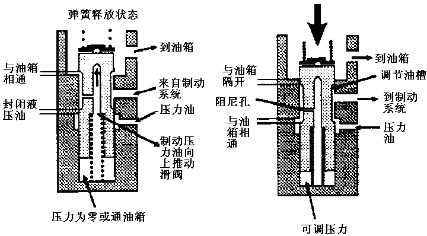
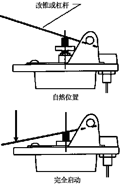
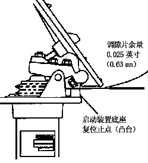
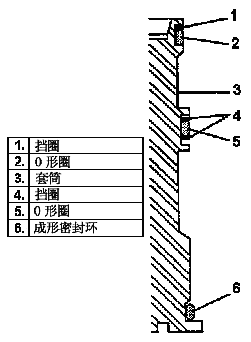
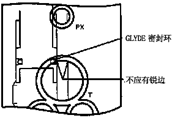
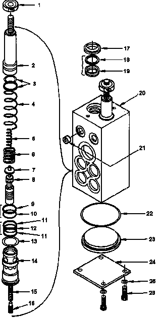
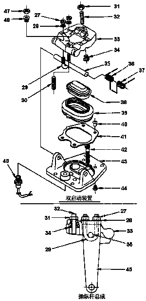

Рис. 1. Основное рабочее состояние тормозного клапана
Рис. 1. Основное рабочее состояние тормозного клапана
Описание и расположение
Тормозной клапан представляет собой гидравлический плунжерный клапан с педальным управлением. Он обычно устанавливается на передней стенке кабины или полу под приборной панелью перед водителем.
Управление (рис. 1)
Блок управления тормозами в основном служит для непосредственного и косвенного регулирования давления гидравлического масла во фрикционной системе торможения карьерного самосвала.
При нахождении в положении «Расторможено» клапан освобождается, регулируемый золотниковый клапан находится в верхней части или свободном состоянии. В этот момент масляная ванна возле верхней части золотникового клапана расположена в масляной полости корпуса клапана. Нижняя часть масляной ванны золотникового клапана расположена в отверстии клапана с регулируемым давлением. При этом отверстие бачка сообщается с отверстием клапана для отвода регулируемого давления. В этот момент давление в тормозной системе равно давлению в возвратном канале гидробака, близкому к 0 фунтов/кв. дюйм (кПа). Таким образом осуществляется переход в положение «Расторможено».
Когда водитель хочет совершить маневр торможения, при нажатии на педаль тормоза создается давление в системе по сигналу управления в зависимости от степени нажатия на педаль, оно передается в блок управления через два управляющих отверстия или отверстие «POX». Давление, действующее на верхнюю часть золотникового клапана, заставляет его двигаться вниз до верхней части регулировочной пружины клапана. Под этим действием регулируемый золотниковый клапан перемещается вниз. Когда золотниковый клапан перемещается вниз до кольцевой полости, регулируемая масляная ванна выдвигается из масляной полости корпуса клапана, в этот момент возвратный канал бачка закрывается. Золотниковый клапан продолжает двигаться вниз и заставляет масляную ванну в нижней части золотникового клапана перемещаться к отверстию для подвода напорного масла в блоке клапана. Напорное гидравлическое масло непосредственно подается на вход напорной тормозной жидкости через маслоподводящее отверстие в блоке клапанов. Гидравлическое масло через маломерное отверстие поступает в масляную полость в нижней части золотникового клапана вслед за повышением давления в тормозной системе. В нижней части регулируемого золотникового клапана создается давление вслед за повышением давления, оно начинает толкать золотниковый клапан вверх. Если блок управления не находится в свободном состоянии, то золотниковый клапан продолжает двигаться вверх и сжимать пружину между золотниковым клапаном и плунжером. Когда в системе создается достаточно высокое давление, тогда оно заставляет золотниковый клапан преодолевать усилие пружины и двигаться вверх, в этот момент отключается подачи напорного масла на отверстие для отвода регулируемого давления. При этот давление на входе золотникового клапана и управляющее давление находятся в состоянии равновесия.
Управляющее давление повышается вслед за дальнейшим нажатием на педаль, при этом продолжается увеличение давления на пружину, повторять вышеуказанную процедуру до повторного достижения равновесия давления.
Когда водитель хочет совершить маневр растормаживания, то при отпускании педали тормоза пропадает управляющий сигнал. При этом золотниковый клапан в сборе находится в неравновесном состоянии, входное отверстие тормозной системы сообщается с бачком. В этот момент гидравлическое масло отводит от системы, осуществляется растормаживание.
По конструкции управление клапана может осуществляться с помощью механического привода. Перемещение рычага управления, как правило, подтягивание троса привода в сборе заставляет рычаг управления в сборе давить на свой плунжер в сборе образом, как создается управляющее давление. Выравнивание давления и освобождение от давления осуществляются таким же образом.
Управление фонарями стоп-сигналами осуществляется нормализованным бесконтактным переключателем, переключение режимов работы других функциональных элементов осуществляется путем подключения и отключения блока управления тормозами.
Техническое обслуживание и регулировка
Периодическое техническое обслуживание блока управления тормозами включает следующие виды работ:
1. Проверить блок управления тормозами, соответствующие узлы и детали и соединения на наличие повреждений, износа или утечек. Отремонтировать или заменить по мере необходимости.
ПРИМЕЧАНИЕ: Визуально проверить правильность установки крышки клапана и защитного кожуха в сборе, легкость доступа для ремонта. Любые проблемы с данной сборочной единицей могут привести к нарушению работоспособности блока управления тормозами.
2. Проверить работоспособность блока управления тормозами в соответствии с порядком, указанным в части 5 - «Гидравлическая система». Отрегулировать тормозной клапан в соответствии с установленным порядком или подробным порядком, указанным в последующем разделе данной части.
Регулировка тормозного клапана (см. рис. 4)
Регулирование давления
Регулирование максимального давления на выходе тормозного клапана производится в следующем порядке:
1. Остановить карьерный самосвал в безопасном месте, кроме использования фрикционной системы торможения, еще нужно надежно удерживать его в неподвижном состоянии другим подходящим методом.
2. Проверить работоспособность блока управления тормозами в соответствии с порядком, указанным в части 5 - «Гидравлическая система».
ПРИМЕЧАНИЕ:
1. Регулировка каждого золотникового клапана в соответствии с вышеуказанным порядком дает возможность осуществлять регулирование давления в рабочей тормозной системе с сервоприводом и тросовым приводом.
2. Если давление в контурах рабочей тормозной системы переднего и заднего мостов слишком высокое или низкое, но пропорциональное соотношение давления все-таки правильное, то можно отрегулировать путем увеличения или уменьшения давления на выходе клапана с серводействием.
3. Выключить двигатель.
4. Полностью сбросить давление из тормозного энергоаккумулятора через ручной дренажный клапана энергоаккумулятора.
5. Снятие рычага управления и привода в сборе производится в следующем порядке:
a. Ослабить контргайку (27) и прокладку (28) для крепления U-образного болта к сборочной единице и снять палец(35).
b. Снять рычаг управления/кулачок привода.
ПРИМЕЧАНИЕ: Рекомендуется проводить регулировку золотникового клапана согласно шагам от 6 до 10 один за другим с целью обеспечения правильной регулировки.
6. Ослабить установочный винт для крепления регулировочной гайки (1) к резьбе плунжера (2).
7. Поворотом регулировочной гайки против часовой стрелки (или к резьбовому концу) осуществляется увеличение давления; поворотом регулировочной гайки по часовой стрелке (или к безрезьбовой части плунжера) осуществляется уменьшение давления.
ПРИМЕЧАНИЕ: В целях обеспечения надлежащей регулировки давления необходимо поворачивать на 1/8 оборота каждый раз, чтобы постепенно увеличить давление.
8. Повторно проверить давление в соответствии с вышеуказанным порядком. Установить штырь (28) и использовать плоскую отвертку или подобной детали в качестве в качестве рычага, что позволяет давить привод вниз до установки рычага управления/кулачка привода в сборе (см. рис. 2).
Рис. 2. Срабатывание тормозного клапана9. Повторно затянуть регулировочный винт до достижения момента 25-30 дюйм-фунтов (2,8-3,4 Н.м), чтобы зафиксировать регулировочной гайки. Вероятно, существует необходимость поворачивания плунжера для обеспечения правильной установки винта.
10. Если существует необходимость регулировки другого золотникового клапана в сборе, то повторять данную процедуру.
11. Повторно установить рычаг управления/копирную пластину в сборе на золотниковый клапан. Равномерно увеличить момент затяжки гайки U-образного болта, потом затянуть ее до достижения момента 140-150 дюйм-фунтов (16-17Н.м).
12. Несколько раз осуществлять торможение и растормаживание. Проверить стабильность давления, если давление изменяется, то повторять вышеуказанную процедуру в соответствии с установленными требованиями.
13. Повторять шаги от 1 до 12 до завершения регулировки.
ПРИМЕЧАНИЕ: Незначительное снижение давления в результате приработки деталей новой или отремонтированной сборочной единицы является нормальным.
14. Постараться как можно скорее нажать на педаль тормоза при работе двигателя на низких оборотах и контролировать тормозное давление. Давление должно достигать максимально установленного значения в течение 1 секунды после нажатия на педаль.
15. Отпустить педаль, затем снова нажать на педаль. Убедиться в плавном повышении давления и отсутствии заклинивания золотникового клапана.
16. Нажать и удерживать педаль в нажатом состоянии в течение 20 секунд, проверить, давление остается нормальным или нет при нажатой педали.
17. Медленно отпустить педаль. Убедиться в плавном снижении давления и отсутствии заклинивания золотникового клапана.
18. Полностью отпустить педаль, проверить, давление на выходе тормозного клапана составляет 0 фунтов/кв. дюйм (кПа) или нет.
Регулировка зоны нечувствительности (см. рис. 3)
Регулировка зоны нечувствительности рычага управления/кулачка привода в сборе производится в следующем порядке:
1. Открутить регулировочный винт против часовой стрелки до момента отрыва от крышки привода.
2. Нанести герметик Loctite242 (или подобный состав) на резьбу регулировочного болта.
3. Установить прокладку толщиной 0,025 дюйма (0,63 мм) между упором педали и держателем привода (см. рис. 3).
4. Повернуть регулировочный болт (по часовой стрелке) до соприкосновения регулировочного винта (24) с крышкой привода.
5. Продолжать повернуть регулировочный болт по часовой стрелке до тех пор, пока не появятся показания на манометре.
6. Повернуть против часовой стрелки регулировочный винт на 1/8 оборота.
7. Нанести несколько капель герметика Loctite242 (или подобный состав) на контргайку (24) и затянуть регулировочный винт надлежащим образом.
8. Снять прокладку.
Регулировка бесконтактного переключателя
Регулировка бесконтактного переключателя производится в следующем порядке
1. Ввинтить бесконтактный переключатель в держатель до соприкосновения с рычагом управления/кулачком в сборе.
2. Повернуть его наружу на 1/4-1/2 оборота и зафиксировать его контргайкой.
3. Медленно включить стояночным тормоз. Переключатель должен быть приведен в действие при легком нажатии на педаль.
ПРИМЕЧАНИЕ: Желательно немного задержать срабатывание переключателя с целью увеличения тормозного давления в системе при срабатывании переключателя. В этом случае необходимо проводить повторную регулировку педали, зоны нечувствительности и настройку бесконтактного переключателя, чтобы получить требуемое значение давления.
Снятие
Снятие блока управления тормозами из карьерного самосвала производится в следующем порядке
1. Остановить карьерный самосвал в безопасном месте, кроме использования фрикционной системы торможения, еще нужно надежно удерживать его в неподвижном состоянии другим подходящим методом.
2. Полностью сбросить давление в тормозной системе в соответствии с порядком, указанным в части 5 - «Гидравлическая система» или подобном документе.
ОПАСНО
Перед снятием деталей или отсоединением гидравлических фитингов следует сбросить гидравлическое давление в тормозной системе, это очень важно.3. Открыть смотровой щиток блока управления тормозами.
4. Отсоединить штуцер маслопровода от блока управления тормозами и закрывать или закупоривать каждое присоединительное отверстие. Приклеить наклейку для облегчения общей сборки на каждое присоединительное отверстие.
5. Снять электрические разъемы и приклеить наклейку для облегчения общей сборки на каждый разъем.
6. Снять болт крепления и контргайка блока управления тормозами.
7. Снять блок управления тормозами.
Разборка (см. рис. 4)
Разборка блока управления тормозами производится в следующем порядке
1. Неоднократно совершить соответствующие действия, слить гидравлическое масло из блока управления в подходящую емкость.
2. Зафиксировать клапан вертикально на тисках, обращать особое внимание на защиту его деталей от повреждений.
3. Снятие рычага управления/кулачка привода производится в следующем порядке:
a. Снять бесконтактный переключатель (48) с целью защиты его от повреждения, убирать его в сторону.
b. Открутить 4 контргайки 1/4′′ (27) с шайбами (28) двух U-образных болтов (29) крепления пальца привода (35), но не нужно их снимать.
c. Снять палец (35) пробойником и молотком по мере необходимости.
d. Снять рычаг управления/кулачок привода в сборе и проверить его на наличие следов износа или повреждений. Убирать его в сторону для последующего использования при повторной установке.
4. Снять 4 болта с круглой головкой (40) для крепления щитка защитного кожуха (41).
5. Держать защитный кожух и плавно подтягивать из блока клапана, снять щиток защитного кожуха (41), защитный кожух (39) и крышку привода (38) в качестве сборочной единицы.
ПРИМЕЧАНИЕ: В низкотемпературных условиях эксплуатации проводить узловую сборку защитного кожуха и крышки привода с помощью специального низкотемпературного клея, и заменить их в качестве секции.
6. Откручивать болт с внутренним шестигранником для крепления регулировочной гайки (1) к резьбе золотникового клапана с серводействием (2).
7. Повернуть регулировочную гайку против часовой стрелки (или к резьбовому концу) и снять ее.
8. Снять 2 болта с внутренним шестигранником для крепления держателя привода к блоку клапанов и снять держатель привода.
9. Установить клапан вверх ногами на тиски.
10. Снять болт (26) и шайбу (25) снизу клапана, снять щиток (24).
11. Снять клапан с тисков и установить его вертикально на верстак.
ПРИМЕЧАНИЕ: В следующей процедуре следует держать ряд маслопроводов и элементы маслопроводов отдельно и определить их расположение, это очень важно. В противном случае накопление допустимых отклонений для разных узлов и деталей может вызвать проблемы.
12. Когда клапан располагается вертикально, масляная пробка должна вываливаться, если это невозможно, слегка ударить по масляной пробке до тех пор, пока она не выйдет.
13. Снять О-образное уплотнительное кольцо (22) из глухого отверстия в держателе блока клапанов. Проверить, затем заменить его новым.
14. Установить блок управления все-таки вертикально на верстак, держать блок управления одной рукой, сдвинуть один из плунжеров вниз другой рукой до момента ослабления регулировочной втулки и золотникового клапана в сборе.
15. Вышеуказанная процедура также распространяется на другие золотниковые клапаны в сборе.
16. Перевернуть клапан на бок на верстаке.
17. Снять регулировочную втулку и золотниковый клапан в сборе из блока клапанов.
18. Снять золотниковый клапан (8), реактивный плунжер (16) и возвратную пружину (15) золотникового клапана с регулировочной втулки (14).
19. Снять держатель пружины (7), регулировочные пружины (5 и 6) и возвратную пружину плунжера (4) из блока клапанов.
20. Установить клапан вертикально на верстак.
21. Снять плунжер (2). Толкать плунжер вниз (к нижней части клапана) вручную до тех пора, пока он не выйдет из блока клапана.
22. Снять О-образное кольцо и тефлоновое упорное кольцо с втулки, заменить их новыми.
23. Снять пылезащитное уплотнительное кольцо (15), уплотнительное кольцо из полиэстера (17) и упорное кольцо (16) из привода, заменить их новыми.
Осмотр и ремонт (см. рис. 4)
Осмотр и ремонт разобранного клапана производятся в следующем порядке:
1. Очистить все металлические детали в чистом растворителе и высушить их сжатым воздухом. Не нужно протирать их тканью.
2. Проверить все детали на наличие следов износа или повреждений. Отремонтировать или заменить по мере необходимости.
3. Проверить наличие/отсутствие износа боковой плоскости плунжера, проходящей через уплотнительный элемент. В случае обнаружения видимого или значительного износа кольцевой канавки вала, то следует заменить золотниковый клапан.
4. Установить золотниковый регулирующий клапан на втулку клапана. Слегка сдвинуть золотниковый клапан до момента прохода через втулку клапана. Золотниковый клапан должен свободно и ровно проходить через всю втулку клапана. Если это не так, то его необходимо заменить.
ВАЖНО: Нельзя просто заменить золотниковый клапан или втулка клапана. Следует заменить их в комплекте.
5. Тщательно проверить каждую пружину на наличие трещин или повреждений. В случае обнаружения проблем, следует ее заменить.
6. Проверить резьбовой соединитель в клапане. В случае обнаружения повреждения любых витков резьбы, следует заменить соединитель в следующем порядке.
a. Ввинтить подходящий болт в соединитель с противоположной стороны буртика соединителя.
b. Подпирать данную секцию короткой стальной трубой вокруг соединителя.
c. Слегка ударить по головке болта молотком, чтобы болт свободно проходил внутрь соединителя.
d. Снятие разъема из держателя привода производится в следующем порядке:
(1) Установить держатель привода на верстак в направлении вверх и непосредственно подпирать его с использованием каждого монтажного отверстия.
(2) Слегка ударить молотком, чтобы соединитель проходил внутрь держателя до плотного прилегания буртика соединителя к держателю в одной плоскости.
ВАЖНО: Необходимо надежно подпирать держатель во избежание повреждений.
(3) Снова тщательно очистить данную сборочную единицу.
e. Если соединитель был снят из кулачка привода:
(1) Установить кулачок привода на верстак в направлении вверх и подпирать его с использованием центрального отверстия.
(2) Слегка ударить молотком, чтобы соединитель проходил внутрь кулачка привода до плотного прилегания буртика соединителя к кулачку привода в одной плоскости.
ВАЖНО: Необходимо надежно подпирать кулачок привод во избежание повреждений.
(3) Снова тщательно очистить данную сборочную единицу.
7. Проверить защитный кожух (39) на наличие следов трещин, разрывов или других повреждений. В случае обнаружения значительных повреждений, следует его заменить в следующем порядке
ПРИМЕЧАНИЕ: Сборка производится в низкотемпературных условиях, детали должны быть установлены в комплекте (рекомендуется приклеить специальный защитный кожух к крышке привода низкотемпературным клеем).
a. Снять защитный кожух с крышки (38). Выбрасывать старый защитный кожух.
b. Полностью очистить боковую поверхность крышки. Срезать выступающие наплывы между крышкой и защитным кожухом чистым ножом или другим подходящим скребком. Удалить все остатки клеящего вещества или другие частицы с защитного кожуха и тщательно его очистить.
c. Нанести тонкий слой герметика Locite Prism 410 (или подобного состава) на два длинные края верхней части крышки.
ПРИМЕЧАНИЕ: Не допускается нанесение герметика на закругленные края, поскольку эти закругленные края должны быть свободными, чтобы обеспечить защитный кожух хорошим вентилированием.
d. Осторожно установить крышку в место стыка с новым защитным кожухом, удалить остатки клеящего вещества.
e. Установить защитный кожух до сопряжения с верхней частью крышки, затем положить в сторону. Полное отверждение клеящего вещества происходит примерно через 30 минут.
Сборка (см. рис. 4)
Сборка блока управления тормозами производится в следующем порядке:
ПРИМЕЧАНИЕ:
(1) В процессе сборки Слегка смазывать О-образные кольца гидравлическим маслом, которое совместимо с используемые гидравлическим маслом в гидравлической системе.
(2) В целях предотвращения накопления допустимых отклонений для деталей необходимо присоединить детали обратно к тем же маслопроводам или отверстиям, это очень важно.
1. Сначала установить уплотнительное кольцо из полиэстера (19) в одну из уплотнительных канавок блока клапанов. Установить уплотнительное кольцо в канавку в направлении к нижней части клапана, внутренняя боковая поверхность внутреннего О-образного кольца должна направляться вниз (см. рис. 5).
2. После установки уплотнительного кольца в канавку давить уплотнительное кольцо вниз инструментом в виде гладкого О-образного кольца, убедиться в том что внутреннее О-образное кольцо все-таки располагается с внутренней стороны уплотнительного кольца из полиэстера, кроме того, нельзя его переместить в процессе сборки.
3. Установить упорное кольцо (18) над уплотнительным кольцом из полиэстера. Сначала установить вручную, затем продолжать установить уплотнительное кольцо в канавку вручную или приспособлением для установки О-образных колец.
4. Установить пылезащитное уплотнительное кольцо (17) над глухим отверстием и зафиксировать его в уплотнительное канавке, рабочая кромка должна направляться к приводу.
5. Шаги от 1 до 4 могут использоваться для других отверстий.
6. Установить О-образное кольцо (10) в самую маленькую уплотнительную канавку (расположенную в верхней части) регулировочной втулки (14).
7. Установить О-образное кольцо (12) в центральную уплотнительную канавку регулировочную втулки (14).
8. Установить О-образное кольцо (13) в самую большую уплотнительную канавку (расположенную в нижней части) регулировочной втулки (14).
9. Установить разводные нейлоновые упорные кольца (11) по обе стороны центрального О-образного кольца (12) регулировочной втулки.
10. Установить разводное нейлоновое упорное кольцо (8) на О-образное кольцо (9) над регулировочной втулкой. Установить упорное кольцо до плотного сопряжения с верхней частью регулировочной втулки.
ПРИМЕЧАНИЕ:
(1) Данное О-образное кольцо является самым маленьким из 3 колец.
(2) Верхняя часть втулки представляет собой конец, имеющий максимальный наружный диаметр.
11. Шаги от 6 до 10 могут использоваться для второго отверстия или переключателя.
12. Установить одно О-образное кольцо (3) в канавку под О-образное кольцо на конец максимального диаметра плунжера (2).
13. Установить одно разводное Уплотнительное кольцо Glyde над О-образным кольцом.
ПРИМЕЧАНИЕ: Перед установкой свернуть разводное уплотнительное кольцо Glyde и вдавливать его в малый круг с целью обеспечения плотного сопряжения с О-образным кольцом.
14. Шаги от 12 до 13 могут использоваться для второго отверстия или переключателя.
15. При установке нового кулачка привода следует установить пробку в соответствии с порядком, указанным в разделе «Осмотр и ремонт».
16. Соответственно смазывать уплотнительное кольцо Glyde (3) плунжера.
ПРИМЕЧАНИЕ: В следующей процедуре следует установить детали обратно в посадочное место, это очень важно.
17. Установить один из плунжеров (2) в одно из отверстий или маслопроводе. Убедиться в надлежащей фиксации и правильной посадке плунжера.
ПРИМЕЧАНИЕ: В процессе установки следует обращать особое внимание на защиту уплотнительного кольца Glyde от повреждений или царапин. При установке плунжера наблюдать за смотровое отверстие бачка. Следует обходить острые края блока клапанов во избежание повреждения уплотнительного кольца Glyde, это очень важно.
18. Шаги от 16 до 17 могут использоваться для второго отверстия или переключателя.
ПРИМЕЧАНИЕ: Следует еще раз отметить, что перед установкой другого отверстия или переключателя рекомендуется установить деталей для одного отверстия или переключателя.
19. Зафиксировать клапан вверх ногами с помощью тисков, установить возвратную пружину (4), регулировочные пружины (5 и6) и держатель пружины (7) плунжера в отверстия.
ПРИМЕЧАНИЕ: В случае невозможности правильной установки держателя пружины (7) над регулировочной пружиной, следует слегка потрясти данный клапан для обеспечения правильной установки держателя пружины.
20. Установить пружину на конец с отверстием золотникового регулирующего клапана (8).
21. Соответственно смазывать золотниковый регулирующий клапан (8).
22. Установить золотниковый регулирующий клапан (8) на регулировочную втулку (14). Сферически конец золотникового клапана должен находиться над регулировочной втулкой.
ПРИМЕЧАНИЕ:
(1) Верхняя часть втулки представляет собой конец, имеющий минимальный наружный диаметр.
(2) Проверить и убедиться в плавном и свободном перемещении золотникового клапана. Если золотниковый клапан не может плавно и свободно перемещаться, то следует заменить втулку в сборе целиком с золотниковым клапаном.
23. Перед установкой втулку в блок клапанов снять золотниковый клапан (8) с втулки.
24. Слегка смазывать О-образные кольца (10, 12 и 13) регулировочной втулки.
25. Временно снять золотниковый клапан (8) из втулки клапана, установить регулировочную втулку (14) в отверстие в блоке клапанов надлежащим образом. Осторожно сдвинуть втулку в блок клапанов до соприкосновения нижним выступом втулки с блоком клапанов.
26. Установить возвратную пружину золотникового клапана в золотниковый клапан (8).
27. Слегка смазывать реактивный плунжер (16) и установить его в золотниковый регулирующий клапан.
28. Установить золотниковый клапан во втулку клапана, сферический конец золотникового клапана должен направляться к верхней части клапана.
29. Шаги от 19 до 28 могут использоваться для второго отверстия или переключателя.
30. Слегка смазывать О-образное уплотнительное кольцо (22) большого щитка и установить его в глухое отверстие в нижней части регулировочной втулки.
31. Установить масляную пробку (23) в глухое отверстие в нижней части клапана.
ПРИМЕЧАНИЕ: Сторона с буртиком пробки отверстия должна направляться к глухому отверстию или верхней части клапана.
32. Установить щиток втулки (24) над масляной пробкой. Зафиксировать его болтами с внутренним шестигранником (26) и контрящую шайбу (25), затянуть их по диагонали и равномерно установить на регулировочную втулку в сборе. Затянуть до достижения момента 140-150 дюйм-фунтов (16-17 Н.м).
33. Установить держатель привода на верхнюю часть клапана.
ПРИМЕЧАНИЕ: В целях получения целевого направления масляного отверстия необходимо обеспечить правильную установку держателя. Равномерно затянуть и 2 болта с внутренним шестигранником. Затянуть их до достижения момента 180-190 дюйм-фунтов (20-21 Н.м).
34. Навинтить регулировочную гайку (1) на плунжер. Повернуть в направлении вниз до конца резьбы.
35. Затянуть винт крепления регулировочной гайки только до взаимного соприкосновения.
36. Установка рычага управления/кулачок привода производится в следующем порядке:
a. Установить и затянуть крышку привода (38), защитный кожух (39), щиток защитного кожуха (41) на держатель привода с помощью 4 болтов с круглой головкой (40) и затянуть их надлежащим образом.
ПРИМЕЧАНИЕ: Сборка производится в низкотемпературных условиях, детали должны быть установлены в комплекте (рекомендуется приклеить специальный защитный кожух к крышке привода низкотемпературным клеем).
b. Вставить палец через отверстие в держателе привода, отверстие под U-образный болт и отверстие под палец в другом крае держателя привода. В этом процессе установить две возвратные пружины (36 и 37) рычага управления.
c. Совместить с пальцем и затянуть 4 шестигранные гайки (27) и шайбы (28) двух U-образных болта (29), зафиксировать их надлежащим образом. Равномерно затянуть их до достижения момента 140-150 дюйм-фунтов (16-17 Н.м).
Общая сборка:
Установка блока управления тормозами на карьерный самосвал производится в следующем порядке:
1. Установить клапана в посадочное место надлежащим образом. Зафиксировать его болтами и контргайками.
2. Если бесконтактный переключатель (48) быт снят, то следует установить его в блок управления, проводить регулировку в соответствии с порядком ремонта и регулировки.
3. Повторно присоединить гидравлические фитинги и электрические разъемы к блоку управления в сборе.
4. Полностью удалить воздух и загрязняющие вещества из системы, указанным в данном разделе и части 5 - «Гидравлическая система» или подобном документе.
5. Проводить осмотр и регулировку блока управления тормозами в соответствии с порядком ремонта и регулировки, указанным в данном разделе и части 5 - «Гидравлическая система» или подобном документе.
6. Закрепить или установить снятый смотровой щиток.
Гидравлическая система – ножной тормозной клапан
050-0200
Гидравлическая система – ножной тормозной клапан
050-0200
12
9
Гидравлическая система – ножной тормозной клапан
050-0200
11
Демпфирующее отверстие
Отделяется от бачка
От тормозной системы
Масло под давлением
Поток тормозной жидкости под давлением толкает золотниковый клапан вверх
Регулируемая масляная ванна
К бачку
Масло под давлением
К тормозной системе
Гидравлическое масло в закрытом состоянии
Пружина в свободном состоянии
Сообщается с бачком
К бачку
Сообщается с бачком
Регулируемое давление
Нулевое давление или сообщается с бачком
Безопасное срабатывание
Исходное положение
Отвертка или рычаг
Припуск для регулировочной прокладки - 0,025 дюйма (0,63 мм)
Упор (выступ) держателя пускового устройства
Рис. 3. Регулировка мертвой зоны
1Упорное кольцо2О-образное кольцо3Втулка4Упорное кольцо5О-образное кольцо6Профильное уплотнительное кольцо
Рис. 5. Расположение уплотнительной втулки
Уплотнительное кольцо GLYDE
не должно быть острых краев
Рис. 6. Вид перепускного отверстия сверху
ПРЕДУПРЕЖДЕНИЕ
В целях предотвращения перенапряжения или повреждения пружины в процессе регулировки давления необходимо навинтить регулировочную гайку до конца резьбы, это очень важно.
Спецификация1Регулировочная гайка10уплотнительное кольцо19уплотнительное кольцо2Плунжер11Стопорное кольцо20Блок клапанов3уплотнительное кольцо12уплотнительное кольцо21Болт4Пружина13уплотнительное кольцо22уплотнительное кольцо5Пружина14Втулка23Резьбовая пробка6Пружина15Пружина24Щиток7Держатель пружины16Реактивный плунжер25Шайба8Золотниковый клапан17Пылезащитное уплотнительное кольцо26Болт9Стопорное кольцо18Стопорное кольцо27ГайкаРис. 4. Тормозной клапан в сборе (1)
Спецификация28Шайба36Возвратная пружина рычага управления44Винт29U - образный болт37Возвратная пружина рычага управления45Держатель30Шпилька38Крышка46Разъем31Гайка39Защитный кожух47Рычаг управления32Шпилька40Винт48Бесконтактный переключатель в сборе33Кулачок привода41Щиток49Гайка34Резьбовая пробка42Винт50Резьбовая пробка35Шкворень43Держатель Рис. 4. Тормозной клапан в сборе (2)
Рычаг управления в сборе
Двойное пусковое устройство
Иллюстрации






